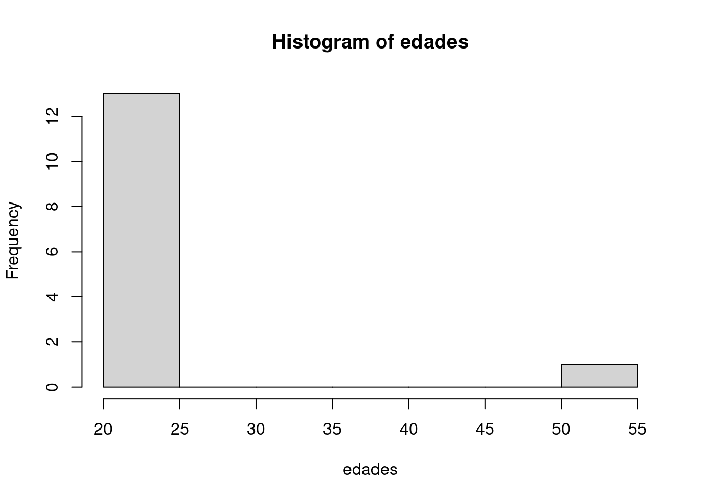

edades <- c(51, 20,20,20,20,20,20,20,20,20,20,20,20,25)
mean(edades)[1] 22.57143edades <- c(51, 20,20,20,20,20,20,20,20,20,20,20,20,25)
mean(edades)[1] 22.57143median(edades)[1] 20sueldos <-c(100000,100000,100000,100000,100000,100000,100000,100000,100000,100000
,100000,100000,100000,100000,100000,100000,100000,100000, 5000000)mean(sueldos)[1] 357894.7options(scipen = 999)
median(sueldos)[1] 100000No hay una función es a «ojo»
hist(edades)
table(edades)edades
20 25 51
12 1 1 mean(edades)[1] 22.57143sd(edades)[1] 8.290071sd(sueldos)[1] 1124137Desviación mediana absoluta
mad(edades)[1] 0mad(sueldos)[1] 0range(edades)[1] 20 51range(sueldos)[1] 100000 5000000Analizamos datos por linea de comando y observamos que No son csv (comma-separated values) sino que están separados las columnas por ;
Esto es de datos de europa y america latina donde la coma (,) se usa para separar decimales.
2,5
a diferencia de países anglosajones (y angosajonizados)
library(tidyverse)── Attaching core tidyverse packages ──────────────────────── tidyverse 2.0.0 ──
✔ dplyr 1.1.4 ✔ readr 2.1.5
✔ forcats 1.0.0 ✔ stringr 1.5.1
✔ ggplot2 3.5.0 ✔ tibble 3.2.1
✔ lubridate 1.9.3 ✔ tidyr 1.3.1
✔ purrr 1.0.2
── Conflicts ────────────────────────────────────────── tidyverse_conflicts() ──
✖ dplyr::filter() masks stats::filter()
✖ dplyr::lag() masks stats::lag()
ℹ Use the conflicted package (<http://conflicted.r-lib.org/>) to force all conflicts to become errorsmy_data <- read_delim("../../data/usu_hogar_T323.txt", delim = ";")Warning: One or more parsing issues, call `problems()` on your data frame for details,
e.g.:
dat <- vroom(...)
problems(dat)Rows: 16656 Columns: 88
── Column specification ────────────────────────────────────────────────────────
Delimiter: ";"
chr (6): CODUSU, MAS_500, IV1_ESP, IV3_ESP, II7_ESP, II8_ESP
dbl (80): ANO4, TRIMESTRE, NRO_HOGAR, REALIZADA, REGION, AGLOMERADO, PONDERA...
num (1): IPCF
lgl (1): IV7_ESP
ℹ Use `spec()` to retrieve the full column specification for this data.
ℹ Specify the column types or set `show_col_types = FALSE` to quiet this message.problemas <- problems(my_data)
print(problemas)# A tibble: 29 × 5
row col expected actual file
<int> <int> <chr> <chr> <chr>
1 243 19 1/0/T/F/TRUE/FALSE "LE PIDE AGUA A LA TIA QUE VIVE CERCA" /clo…
2 505 19 1/0/T/F/TRUE/FALSE "trae agua por caños aereos desd… /clo…
3 670 19 1/0/T/F/TRUE/FALSE "no está conectada cruza una man… /clo…
4 1093 19 1/0/T/F/TRUE/FALSE "camion cisterna le llena el tanque" /clo…
5 1094 19 1/0/T/F/TRUE/FALSE "riachuelo" /clo…
6 1609 19 1/0/T/F/TRUE/FALSE "de otra vivienda" /clo…
7 1785 19 1/0/T/F/TRUE/FALSE "SALADA, CONTAMINADA" /clo…
8 2328 19 1/0/T/F/TRUE/FALSE "CAMION CISTERNA " /clo…
9 2420 19 1/0/T/F/TRUE/FALSE "COOPERATIVA DE AGUA VILLA ALLENDE" /clo…
10 2579 19 1/0/T/F/TRUE/FALSE "POZO" /clo…
# ℹ 19 more rows# Donde está el problema
names(my_data)[19][1] "IV7_ESP"names(my_data) [1] "CODUSU" "ANO4" "TRIMESTRE" "NRO_HOGAR" "REALIZADA"
[6] "REGION" "MAS_500" "AGLOMERADO" "PONDERA" "IV1"
[11] "IV1_ESP" "IV2" "IV3" "IV3_ESP" "IV4"
[16] "IV5" "IV6" "IV7" "IV7_ESP" "IV8"
[21] "IV9" "IV10" "IV11" "IV12_1" "IV12_2"
[26] "IV12_3" "II1" "II2" "II3" "II3_1"
[31] "II4_1" "II4_2" "II4_3" "II5" "II5_1"
[36] "II6" "II6_1" "II7" "II7_ESP" "II8"
[41] "II8_ESP" "II9" "V1" "V2" "V21"
[46] "V22" "V3" "V4" "V5" "V6"
[51] "V7" "V8" "V9" "V10" "V11"
[56] "V12" "V13" "V14" "V15" "V16"
[61] "V17" "V18" "V19_A" "V19_B" "IX_TOT"
[66] "IX_MEN10" "IX_MAYEQ10" "ITF" "DECIFR" "IDECIFR"
[71] "RDECIFR" "GDECIFR" "PDECIFR" "ADECIFR" "IPCF"
[76] "DECCFR" "IDECCFR" "RDECCFR" "GDECCFR" "PDECCFR"
[81] "ADECCFR" "PONDIH" "VII1_1" "VII1_2" "VII2_1"
[86] "VII2_2" "VII2_3" "VII2_4" my_data <- read_delim("../../data/usu_hogar_T323.txt", delim = ";", guess_max = 10000)Rows: 16656 Columns: 88
── Column specification ────────────────────────────────────────────────────────
Delimiter: ";"
chr (7): CODUSU, MAS_500, IV1_ESP, IV3_ESP, IV7_ESP, II7_ESP, II8_ESP
dbl (80): ANO4, TRIMESTRE, NRO_HOGAR, REALIZADA, REGION, AGLOMERADO, PONDERA...
num (1): IPCF
ℹ Use `spec()` to retrieve the full column specification for this data.
ℹ Specify the column types or set `show_col_types = FALSE` to quiet this message.#! eval: false
write_rds(my_data,file = "../../data/datos_indec.rds")#! eval: false
# Tarea para Sasha
mis_variables <- sample(names(my_data),size = 4)
print(mis_variables)[1] "IV3_ESP" "VII2_1" "PONDIH" "II7_ESP"Variable ya computada de decil del ingreso. Ordinal. Es discreta
Variable nominal (codigo 1 = si 0 = no) . Discreta.
Variable nominal (si/no). Discreta.